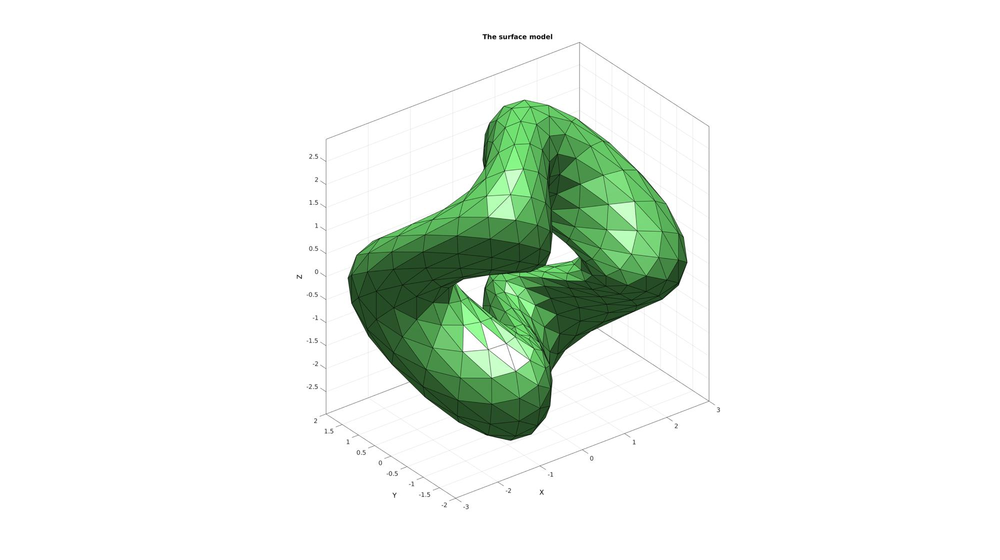
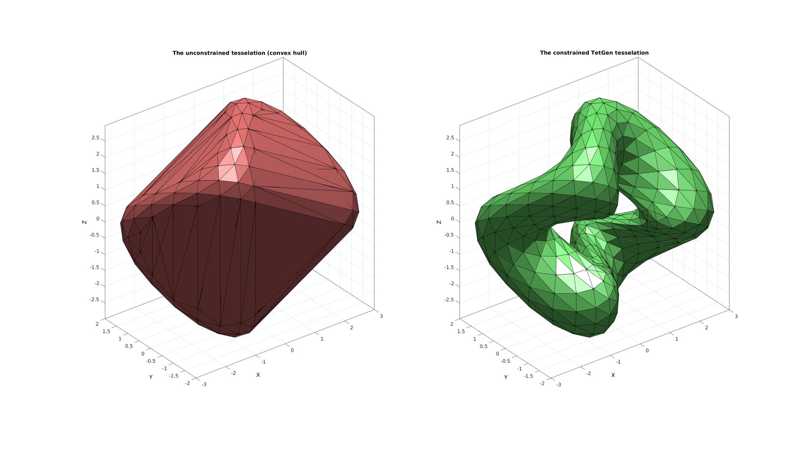
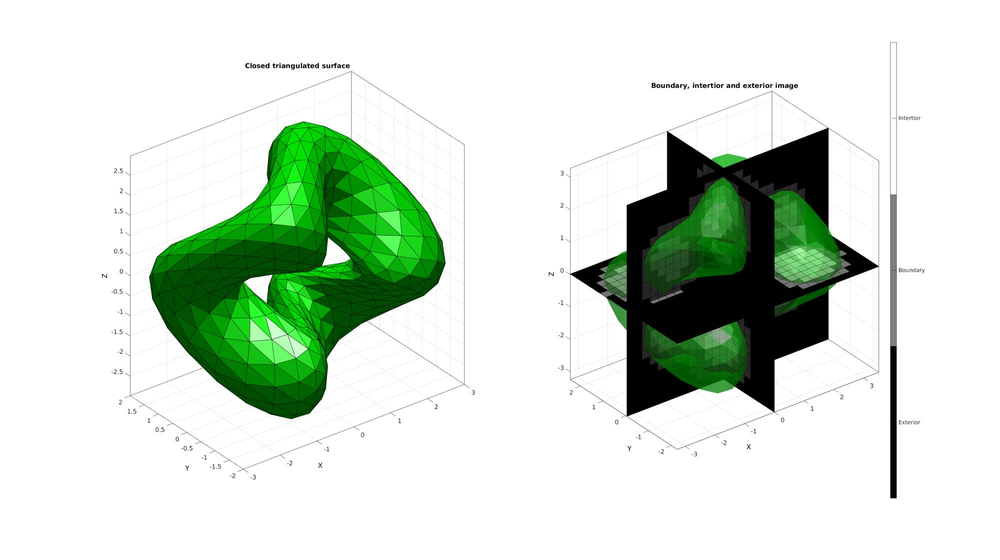
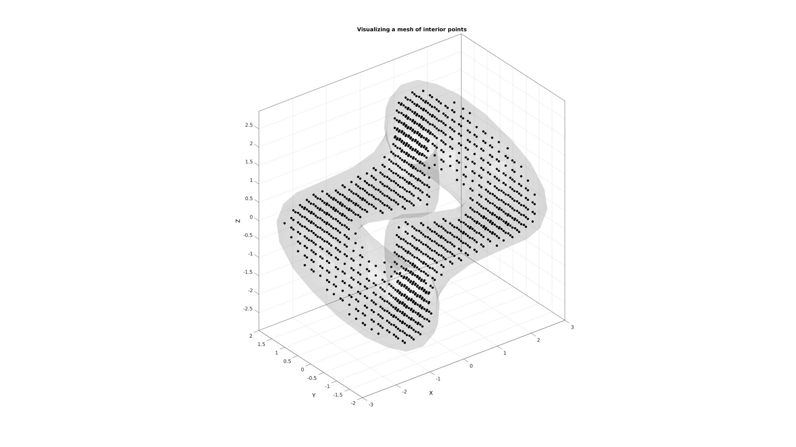

constrainedDelaunayTetGen
Below is a demonstration of the features of the constrainedDelaunayTetGen function
Contents
- Syntax
- Description
- Examples
- Example: Using MATLAB's delaunayTriangulation to compute the unconstrained 3D Delaunay tesselation
- Example: Using TetGen based constrainedDelaunayTetGen to compute the unconstrained 3D Delaunay tesselation
- Example: Using TetGen based constrainedDelaunayTetGen to compute the constrained 3D Delaunay tesselation
- Example: Computing constrained 3D Delaunay tesselations with interior points
Syntax
[TR]=constrainedDelaunayTetGen(V,C);
Description
The constrainedDelaunayTetGen function uses TetGen to create the constrained 3D Delaunay tesselation of point sets.
Examples
clear; close all; clc;
Plot settings
fontSize=15; faceAlpha1=1; faceAlpha2=0.5; edgeColor=0.25*ones(1,3); edgeWidth=1.5; markerSize=25; % path names filePath=mfilename('fullpath'); savePath=fullfile(fileparts(filePath),'data','temp');
Creating example surface input data
% Defining a deformed and rotated torus shape r=1; %Sphere radius rc=2; %Central radius nr=16; nc=30; ptype='tri'; [F,V]=patchTorus(r,nr,rc,nc,ptype); [THETA,RHO] = cart2pol(V(:,1),V(:,2)); V(:,3)=V(:,3)+sin(3*THETA); [R,~]=euler2DCM([0.5*pi 0.5*pi 0.*pi]); V=V*R;
Plotting surface model
cFigure; title('The surface model','FontSize',fontSize); hold on; gpatch(F,V,'gw','k'); camlight headlight; axisGeom(gca,fontSize); drawnow;
Example: Using MATLAB's delaunayTriangulation to compute the unconstrained 3D Delaunay tesselation
Computing the unconstrained 3D Delaunay tesselation of point set
[DT]=delaunayTriangulation(V); %Access the produces tetrahedrons and vertices (possibly different from %input vertices) TET1=DT.ConnectivityList; V1=DT.Points; [F1]=element2patch(TET1,[],'tet4');
Example: Using TetGen based constrainedDelaunayTetGen to compute the unconstrained 3D Delaunay tesselation
Computing the constrained 3D Delaunay tesselation of point set (i.e. faces are matched)
C=[]; %i.e. no constraints [TR]=constrainedDelaunayTetGen(V,C); TET2=TR.ConnectivityList; V2=TR.Points; [F2]=element2patch(TET2,[],'tet4');
%%%%%%%%%%%%%%%%%%%%%%%%%%%%%%%%%%%%%%%%%%%%% --- TETGEN Tetrahedral meshing --- 20-Jun-2019 14:44:18 %%%%%%%%%%%%%%%%%%%%%%%%%%%%%%%%%%%%%%%%%%%%% --- Writing NODE file --- 20-Jun-2019 14:44:18 --- Done --- 20-Jun-2019 14:44:18 --- Running TetGen to mesh input boundary--- 20-Jun-2019 14:44:18 Opening /mnt/data/MATLAB/GIBBON/data/temp/temp.node. --- Done --- 20-Jun-2019 14:44:18 %%%%%%%%%%%%%%%%%%%%%%%%%%%%%%%%%%%%%%%%%%%%% --- Importing TetGen files --- 20-Jun-2019 14:44:18 --- Done --- 20-Jun-2019 14:44:18
Plotting surface model
cFigure; subplot(1,2,1); title('The unconstrained MATLAB tesselation','FontSize',fontSize); hold on; gpatch(F1,V1,'rw','k'); camlight headlight; axisGeom(gca,fontSize); subplot(1,2,2); title('The unconstrained TetGen tesselation','FontSize',fontSize); hold on; gpatch(F2,V2,'gw','k'); camlight headlight; axisGeom(gca,fontSize); drawnow;

Example: Using TetGen based constrainedDelaunayTetGen to compute the constrained 3D Delaunay tesselation
Computing the constrained 3D Delaunay tesselation of point set (i.e. faces are matched)
C=F; %i.e. The faces form the constraints [TR]=constrainedDelaunayTetGen(V,C); TET2=TR.ConnectivityList; V2=TR.Points; [F2]=element2patch(TET2,[],'tet4');
%%%%%%%%%%%%%%%%%%%%%%%%%%%%%%%%%%%%%%%%%%%%% --- TETGEN Tetrahedral meshing --- 20-Jun-2019 14:44:20 %%%%%%%%%%%%%%%%%%%%%%%%%%%%%%%%%%%%%%%%%%%%% --- Writing SMESH file --- 20-Jun-2019 14:44:20 ----> Adding node field ----> Adding facet field ----> Adding holes specification ----> Adding region specification --- Done --- 20-Jun-2019 14:44:20 --- Running TetGen to mesh input boundary--- 20-Jun-2019 14:44:20 Opening /mnt/data/MATLAB/GIBBON/data/temp/temp.smesh. --- Done --- 20-Jun-2019 14:44:20 %%%%%%%%%%%%%%%%%%%%%%%%%%%%%%%%%%%%%%%%%%%%% --- Importing TetGen files --- 20-Jun-2019 14:44:20 --- Done --- 20-Jun-2019 14:44:20
Plotting surface model
cFigure; subplot(1,2,1); title('The unconstrained tesselation (convex hull)','FontSize',fontSize); hold on; gpatch(F1,V1,'rw','k'); camlight headlight; axisGeom(gca,fontSize); subplot(1,2,2); title('The constrained TetGen tesselation','FontSize',fontSize); hold on; gpatch(F2,V2,'gw','k'); camlight headlight; axisGeom(gca,fontSize); drawnow;
Example: Computing constrained 3D Delaunay tesselations with interior points
First the triSurf2Im function is used to mesh the interior
[edgeLengths]=patchEdgeLengths(F,V); edgeLengthsMean=mean(edgeLengths); voxelSize=edgeLengthsMean/2; % The output image voxel size. % Using |triSurf2Im| function to convert patch data to image data [M,G,bwLabels]=triSurf2Im(F,V,voxelSize); imOrigin=G.origin;
Visualize interor voxels
cFigure; subplot(1,2,1); title('Closed triangulated surface','FontSize',fontSize); hold on; gpatch(F,V,'g','k',faceAlpha1); camlight('headlight'); axisGeom(gca,fontSize); subplot(1,2,2); title('Boundary, intertior and exterior image','FontSize',fontSize); hold on; gpatch(F,V,'g','none',faceAlpha2); L_plot=false(size(M)); L_plot(:,:,round(size(M,3)/2))=1; [Fm,Vm,Cm]=ind2patch(L_plot,double(M),'sk'); [Vm(:,1),Vm(:,2),Vm(:,3)]=im2cart(Vm(:,2),Vm(:,1),Vm(:,3),voxelSize*ones(1,3)); Vm=Vm+imOrigin(ones(size(Vm,1),1),:); gpatch(Fm,Vm,Cm,'k',faceAlpha1); L_plot=false(size(M));L_plot(round(size(M,1)/2),:,:)=1; [Fm,Vm,Cm]=ind2patch(L_plot,M,'si'); [Vm(:,1),Vm(:,2),Vm(:,3)]=im2cart(Vm(:,2),Vm(:,1),Vm(:,3),voxelSize*ones(1,3)); Vm=Vm+imOrigin(ones(size(Vm,1),1),:); gpatch(Fm,Vm,Cm,'k',faceAlpha1); L_plot=false(size(M));L_plot(:,round(size(M,2)/2),:)=1; [Fm,Vm,Cm]=ind2patch(L_plot,M,'sj'); [Vm(:,1),Vm(:,2),Vm(:,3)]=im2cart(Vm(:,2),Vm(:,1),Vm(:,3),voxelSize*ones(1,3)); Vm=Vm+imOrigin(ones(size(Vm,1),1),:); gpatch(Fm,Vm,Cm,'k',faceAlpha1); colormap(gray(3)); caxis([0 2]); hc=colorbar; set(hc,'YTick',[1/3 1 5/3]); set(hc,'YTickLabel',{'Exterior','Boundary','Intertior'}); camlight('headlight'); axisGeom(gca,fontSize); drawnow;
Convert interior voxels to interior points
indInterior=find(M==2); [I,J,K]=ind2sub(size(M),indInterior); [X,Y,Z]=im2cart(I,J,K,voxelSize*ones(1,3)); Vi=[X(:) Y(:) Z(:)]; Vi=Vi+imOrigin(ones(size(Vi,1),1),:);
Plotting surface model and interior points
cFigure; title('Visualizing a mesh of interior points','FontSize',fontSize); hold on; gpatch(F,V,'kw','none',0.1); plotV(Vi,'k.','MarkerSize',markerSize); camlight('headlight'); axisGeom(gca,fontSize); drawnow;

Compute constrained Delaunay tesselation
C=F; %i.e. the faces form the constraints Vt=[V;Vi]; %The face vertices and interior vertices combined [TR]=constrainedDelaunayTetGen(Vt,C); TET3=TR.ConnectivityList; V3=TR.Points; [F3]=element2patch(TET3,[],'tet4'); %Create data for cut view X=V3(:,3); XE=mean(X(TET3),2); L=XE<mean(X(:)); [F3c]=element2patch(TET3(L,:),[],'tet4');
%%%%%%%%%%%%%%%%%%%%%%%%%%%%%%%%%%%%%%%%%%%%% --- TETGEN Tetrahedral meshing --- 20-Jun-2019 14:44:24 %%%%%%%%%%%%%%%%%%%%%%%%%%%%%%%%%%%%%%%%%%%%% --- Writing SMESH file --- 20-Jun-2019 14:44:24 ----> Adding node field ----> Adding facet field ----> Adding holes specification ----> Adding region specification --- Done --- 20-Jun-2019 14:44:24 --- Running TetGen to mesh input boundary--- 20-Jun-2019 14:44:24 Opening /mnt/data/MATLAB/GIBBON/data/temp/temp.smesh. --- Done --- 20-Jun-2019 14:44:24 %%%%%%%%%%%%%%%%%%%%%%%%%%%%%%%%%%%%%%%%%%%%% --- Importing TetGen files --- 20-Jun-2019 14:44:24 --- Done --- 20-Jun-2019 14:44:24
Plotting meshed model
cFigure; subplot(1,2,1); title('The full constrained tesselation','FontSize',fontSize); hold on; gpatch(F3,V3,'g','k',faceAlpha1); camlight('headlight'); axisGeom(gca,fontSize); subplot(1,2,2); title('Cut view of interior mesh','FontSize',fontSize); hold on; gpatch(F3c,V3,'g','k',faceAlpha1); camlight('headlight'); axisGeom(gca,fontSize); drawnow;

GIBBON www.gibboncode.org
Kevin Mattheus Moerman, gibbon.toolbox@gmail.com
GIBBON footer text
License: https://github.com/gibbonCode/GIBBON/blob/master/LICENSE
GIBBON: The Geometry and Image-based Bioengineering add-On. A toolbox for image segmentation, image-based modeling, meshing, and finite element analysis.
Copyright (C) 2019 Kevin Mattheus Moerman
This program is free software: you can redistribute it and/or modify it under the terms of the GNU General Public License as published by the Free Software Foundation, either version 3 of the License, or (at your option) any later version.
This program is distributed in the hope that it will be useful, but WITHOUT ANY WARRANTY; without even the implied warranty of MERCHANTABILITY or FITNESS FOR A PARTICULAR PURPOSE. See the GNU General Public License for more details.
You should have received a copy of the GNU General Public License along with this program. If not, see http://www.gnu.org/licenses/.